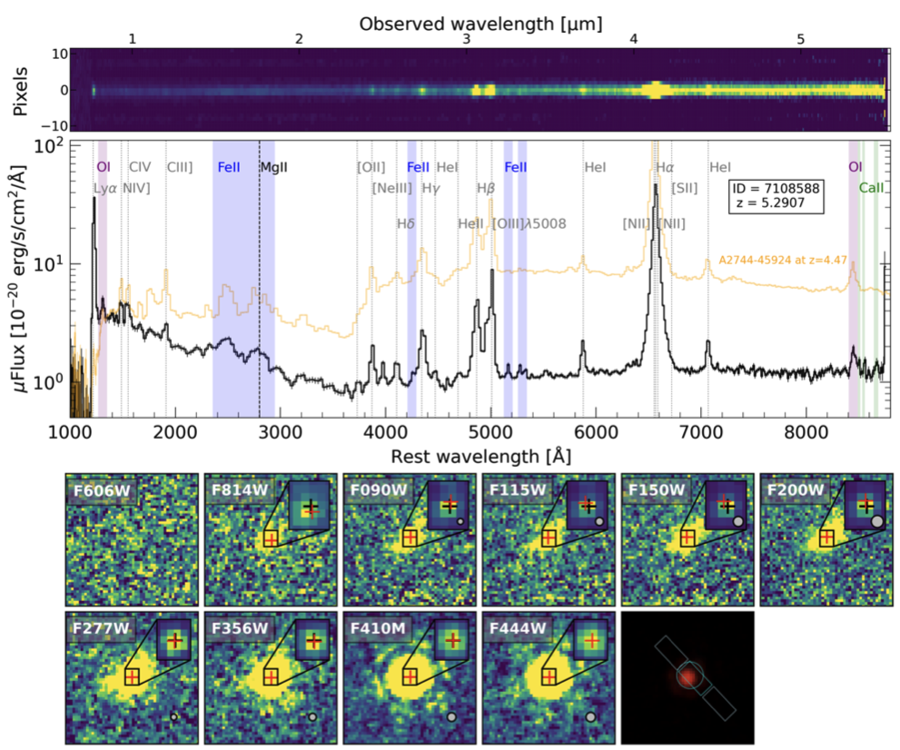
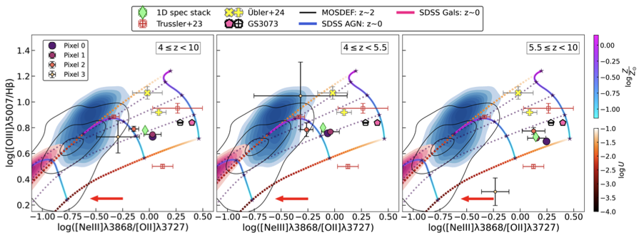
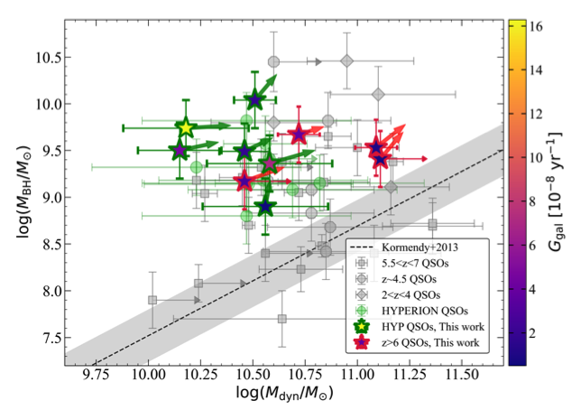
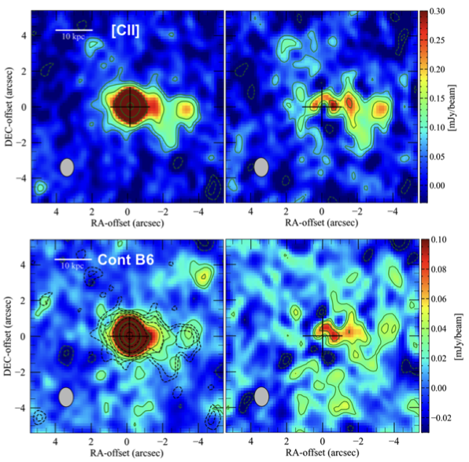

Research focus
My work focuses on the co-evolution of black holes and their host galaxies at high redshift, with recent emphasis on Little Red Dots, quasar host galaxies, and spatially resolved properties of early galaxies.
I am Roberta Tripodi, a researcher working on galaxy evolution and supermassive black hole growth in the early Universe. My work combines observations from facilities such as JWST, ALMA, and NOEMA to study galaxies and quasars at z > 6.
I study how galaxies and supermassive black holes formed and evolved during the first billion years of cosmic history.
My work focuses on the co-evolution of black holes and their host galaxies at high redshift, with recent emphasis on Little Red Dots, quasar host galaxies, and spatially resolved properties of early galaxies.
I completed my PhD in Physics at the University of Trieste with distinction, following MSc and BSc degrees in Physics, both awarded cum laude.
I work extensively with JWST, ALMA, and NOEMA datasets, spectral fitting, kinematic modelling, and Python-based data analysis.
A selection of themes that define my recent work across the early Universe.
I contributed to the identification and characterization of one of the first Little Red Dots showing compelling evidence for a rapidly accreting supermassive black hole, revealing extreme physical conditions that challenge standard models of early galaxy evolution.
I led detailed studies of cold gas, dust, star formation, and host-galaxy assembly in quasars at z > 6, showing that rapid early black hole growth can precede substantial stellar mass build-up.
Within JADES, I led a statistical study of spatially resolved emission-line properties in low-mass galaxies at 4 ≲ z < 10, finding evidence for enhanced central star formation and possible inverted metallicity gradients.
My technical work includes Bayesian analysis, MCMC fitting, line diagnostics, and the development of EOS-Dustfit for modelling cold dust emission in galaxies observed with ALMA and NOEMA.
Recent first-author work spanning Little Red Dots, JWST spectroscopy, and quasar host galaxies.





Education, positions, and academic service.
Selected invited presentations, public engagement, and technical expertise.
Recent invited talks include conferences and colloquia in Sexten, Chile, Bologna, Geneva, and IFPU, along with earlier seminars at Cambridge, MPA, and NASA GSFC.
I regularly contribute to outreach activities, including European Researchers’ Night, public lectures, Astronomy on Tap, and events highlighting women in science.
Press releases, interviews, videos, and outreach posts related to my research.
Short video highlight featuring 2025 research milestones and outreach moments.
Watch video →Interview for the International Day of Women and Girls in Science on the Italian national public broadcaster.
Open interview →ESA Webb feature on the discovery of the distant active supermassive black hole host CANUCS-LRD-z8.6.
Read more →Faculty of Mathematics and Physics press release about the Nature Communications discovery led within the CANUCS collaboration.
Read more →INAF article on the discovery of a remarkably distant and active black hole with JWST.
Read more →Video interview discussing the broad-line region results presented in Tripodi et al. 2025, ApJL.
Watch video →INAF press release on the properties of the quasar J0100+2802 following the results presented in Tripodi et al. 2024.
Read more →